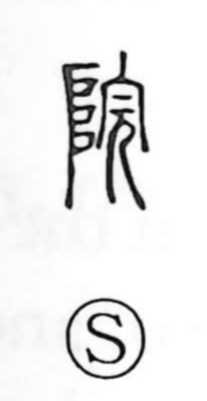

院

Kun: | On: in
courtyard ・ institution ・ compound
Explanation
院 uses 完 as its sound element. An older writing is 寏, meaning an enclosing wall; 院 was first a variant for the same word. The sounds of 完 and 垣 belong to its early history.
From the enclosing wall, 院 names a building with a walled perimeter and the grounds or garden attached to it. The boundary defines the establishment as a place set apart.
The word was applied to many such enclosed places: palace quarters, temples, schools, and other institutions. The familiar institutional sense grows from the building and its surrounding precinct.